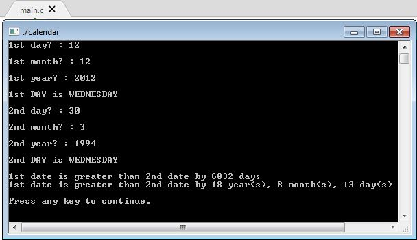

<h1 style="padding-left:4%;padding-top: 2%;padding-bottom: 2%;padding-right: 10%;border-bottom: 1px solid #BDBDBD;">


Age Counter Using C


</h1>


A program based on C


<h2><a href="https://drive.google.com/open?id=1vr_f3P3aQww2Wz2lu0kZJ0B2TREXdBiV" target="_blank"> Process </a></h2>


